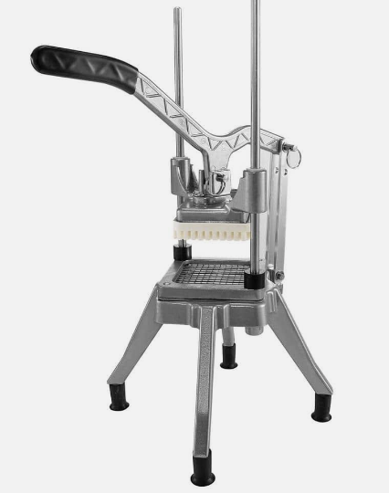

class: center, middle <!-- Links and resources --> [1]: assets/boil-ocean.jpeg [2]: https://en.wikipedia.org/wiki/Technical_debt ![ocean][1] # Boiling The Ocean Harold Vilander --- # Goals: 1. Convenience FE developers to start an iterative approach update to MUI in their team's codebase. 2. Give everyone some tools to use for large overhaul style initiatives. ??? # MUI4 -> 5 - shared components (sqf and sc+) consumption - this update is a good example (good and bad) - what is MUI and why is this an example? # everyone - this is a very expensive meeting and I want everyone to get something out of it. --- # I am going to say this wrong # Tech Debt v. Maintenance --- # Tech Debt - poor design - poor requirements - going "fast" - the debt analogy is why I get this wrong... under maintained systems also seem to have the interest issue --- # Maintenance : keeping the lights on - package /dependency updates - external changes that require code changes --- # Similar needs - refactoring - might take significant effort - need to 'sell' this to superiors --- # Agenda 1. Different approaches: iterative vs boil the ocean 2. Case Study 3. Some 'selling' ideas ??? Framework for the talk today thinking about strategies --- # Boiling the ocean - do it all in one giant ball - keep it synced with current changes - wait until you can get this big ugly thing tested - drop it and deal with the after math ??? epic branch off of master or release --- # Advantages: - sinking the ships / welcome to the new world - ripping the band aid off ??? - assumes a level of success / no roll back --- # Disadvantages: - large / YOLO sized PRs - might take a long time between changes and getting _real_ feedback - prone to having lots of bugs sneak in - done is probably not done - difficult to maintain the branch in during the life of the branch ??? merge conflicts on someone else's code testing is difficult for domain knowledge reasons, have to know every nook and cranny --- # Iterative approach - setup to convert things in small chunks - do those small chunks over time merging as you go. - clean up the _old_ at the end ??? - example typescript conversion, still allow JS while you convert files --- # Advantages: - Fill gaps in developer time - build up changes over time - smaller PRs => better code review - faster _real_ feedback. --- # Disadvantages: - unfinished efforts make a very ugly mess - maybe ugly setups ??? - unfinished: mui v0, flex form > simpler to pick back up tho - ugly setups => more in case study --- # Case Study # MUI 4 -> 5 ??? This has a long history --- # Teamwork is great ??? - Laurel Branden Mudassar Farhan --- # Time Ghost and why you shouldn't just take something at face value. ??? - zeitgeist - recent chapter talk / discussion on tech debt - Brought up that we could do an iterative approach --- # History - Boil the Ocean ??? - Started on Senior OCT 2022 - Moved to SRX - needed to consume a new shared component - moved back to senior - currently parked - 51 child tickets --- # History - Iterative Approach - Started in september have working example NOT DONE!! --- Example for some html fun <div style={{paddingTop: "64px"}}>  </div>